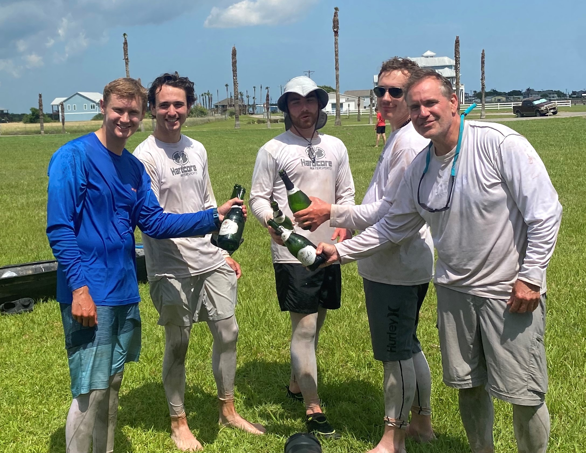
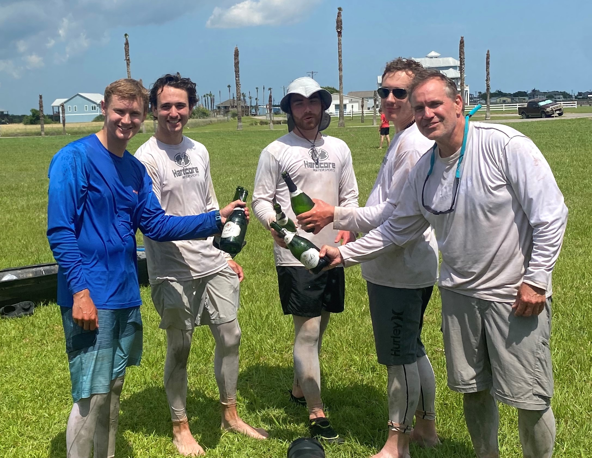

The Texas Water Safari is a 260 mile canoe race from San Marcos to Seadrift TX. There is a 100hr limit to finish the race, but top teams finish in under 40 hours.
In 2019, Team InDeepShip finished the race in 58:12. The TWS board decided to cancel the race in 2020 due to COVID (ugh), so Team InDeepShip had to wait a year before returning to race in 2021, this time finishing in 53:57.


 
